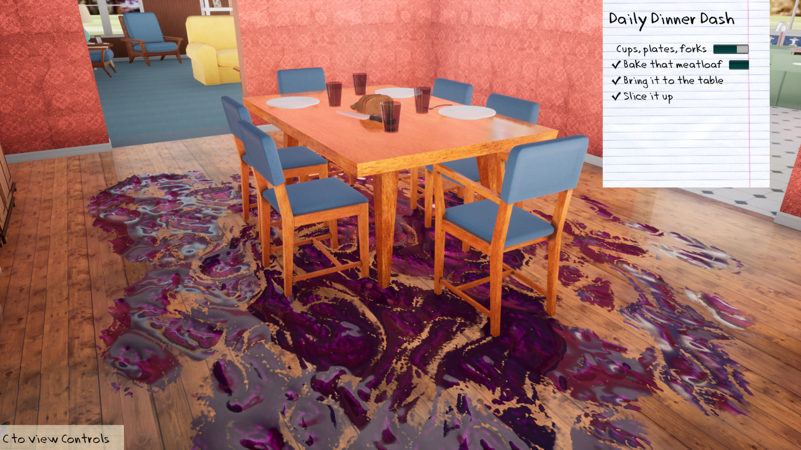
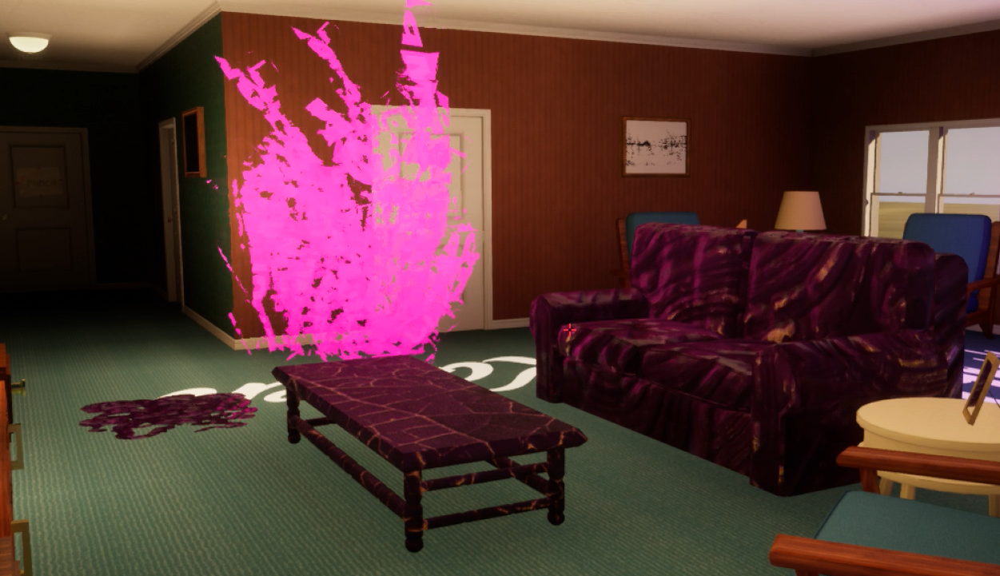
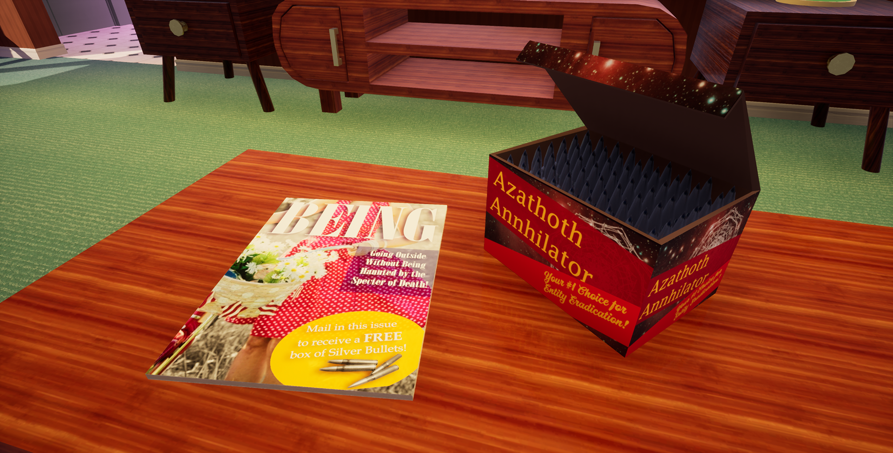
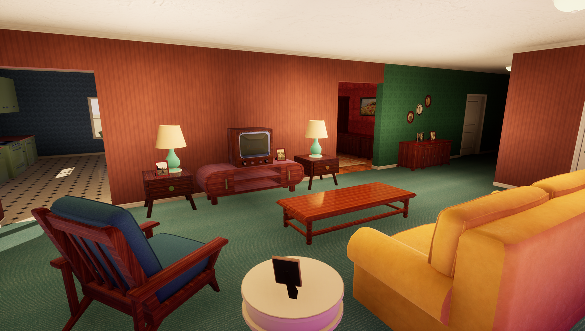
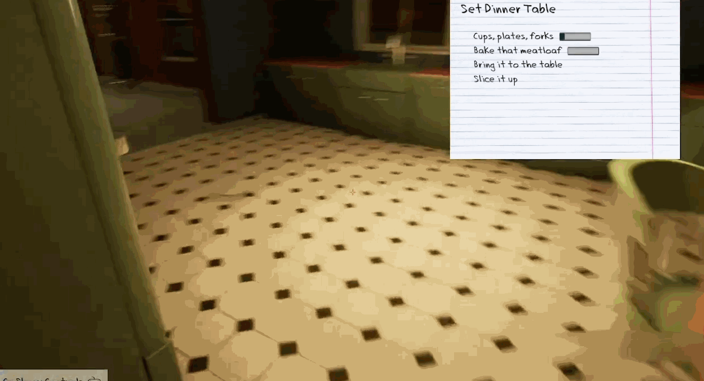
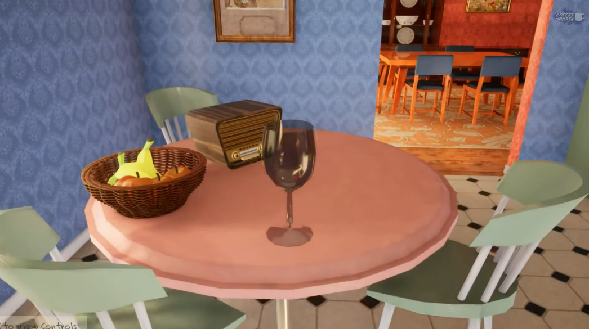
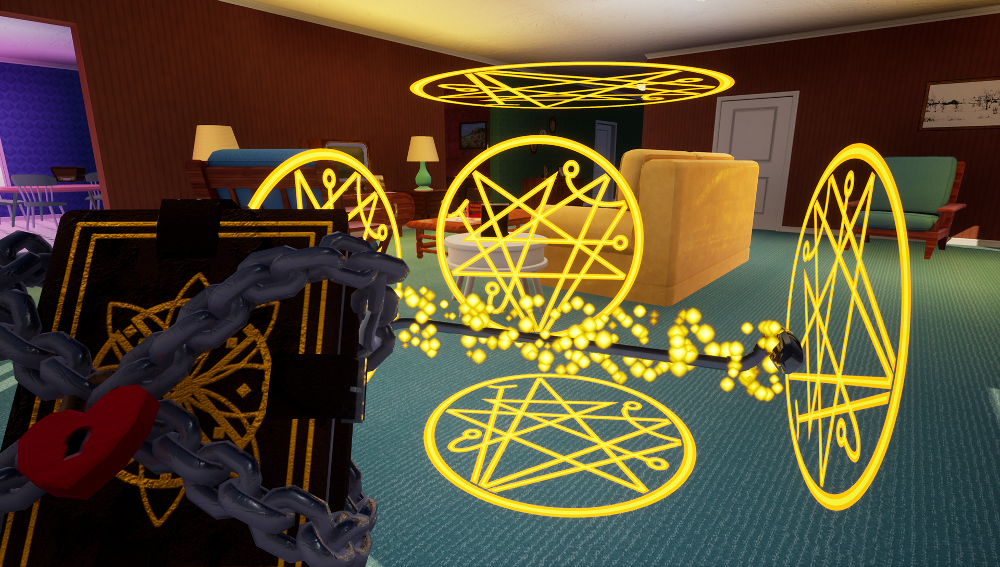

Kate Olguin
Game Designer • Community Coordinator
Game Designer • Community Coordinator
Released in July 2020 on Steam, this free game got a surprising amount of traction for an indie team with no marketing, garnering over 100,000 downloads since launch.

Play as 1950s suburban housewife Karen and grapple with household chores and period-typical misogyny as you attempt to maintain your perfect life while Cthulhu invades your home.

A team this small required many hats. In addition to assigning tasks and keeping us on schedule, I tackled environment art and shaders and worked with the team to develop the gameplay and narrative design.

In addition to myself, we had 1 artist and 2 programmers. With a team this small, it was imperative that we stay on top of our scope, as seemingly small tasks could spiral into days or weeks of work if unchecked.

This game used a combination of blueprints and C++ code. One of the blueprints I created was the "yikes machine", a way to procedurally populate certain parts of the house with ambient horror effects.

We were inspired by the parallels between the anxieties, prejudices, and absurdities of Lovecraft's work and 1950s America. We especially focused on 50s themes of misogyny, consumerism, and keeping up appearances.

Karen is a mother with a distant husband and ungrateful child doing her best to fulfill society's demands in impossible circumstances. We wanted her plight to be sympathetic while still highlighting the ridiculousness of the expectations forced upon her.

Gameplay consists of household tasks like cooking and cleaning. We wanted these actions to feel more tactile than simple button presses, so chore components like food and utensils are physics objects that must be picked up, carried around, and put down.

We didn't have the resources to create NPCs that were physical actors in the game world. Instead, we chose to communicate our story through voiceover from Karen, her family, and the radio. I wrote the game's dialogue, and also provided the radio announcer's voice!

We used repetition to invoke the feeling of spiraling out of control. As the days go on, chores grow absurd. The meatloaf dinner must be chased down and sanctified with holy water, the vacuum is enchanted to shoot silver bullets, and household items become immune to gravity.